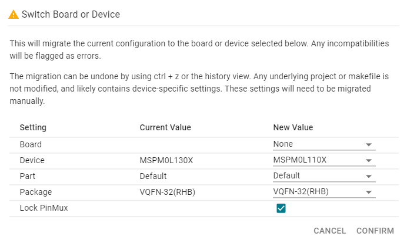
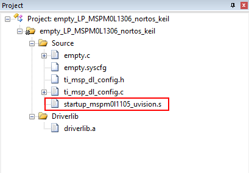
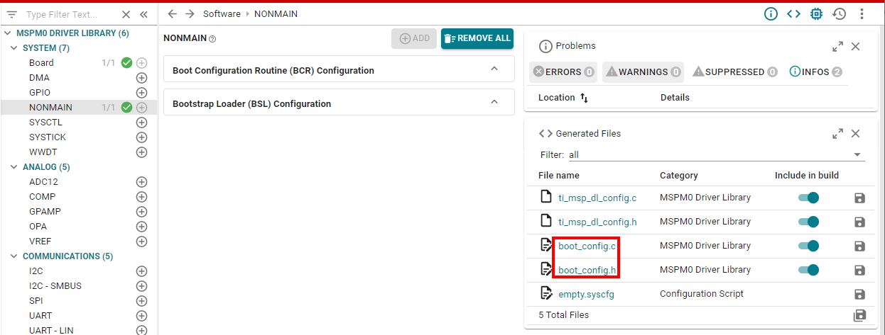
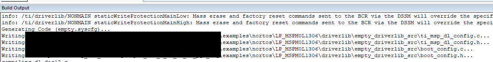
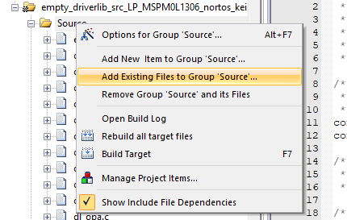
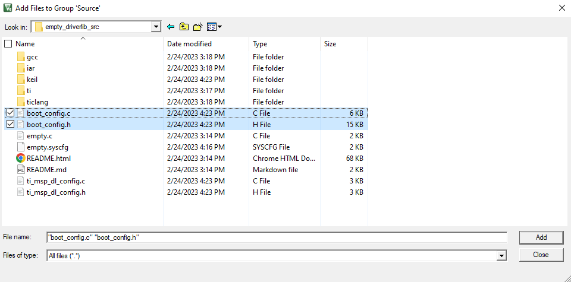
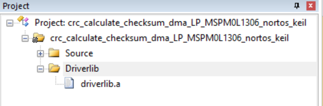
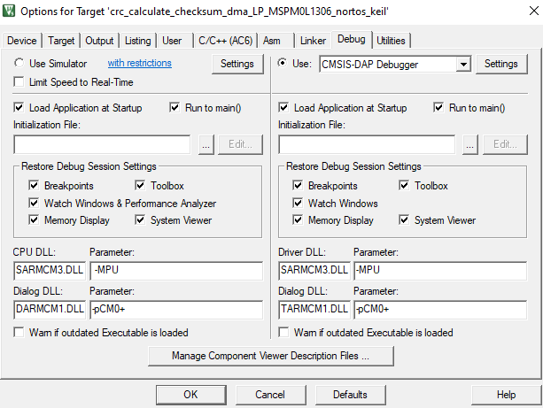

This guide describes only the setup and basic operation of the software development environment, but it does not fully describe the MSPM0 microcontrollers or the complete development software and hardware systems. For details of these items, see the appropriate TI and Keil documents listed in section Related Documentation From Texas Instruments.
These tools contain the most up-to-date materials available at the time of packaging. For the latest materials (including data sheets, user’s guides, software, and application information), visit the TI MSPM0 website or contact your local TI sales office.
Caution - This is an example of a caution statement. A caution statement describes a situation that could potentially damage your software or equipment.
The E2E Community Support Forums for MSPM0 MCUs are available to provide open interaction with peer engineers, TI engineers, and other experts. Additional device-specific information can be found on the MSPM0 website.
Arm Keil MDK, including µVision IDE, debugger and Arm C/C++ compiler, is available from the Keil website. MSPM0 microcontrollers and the MSPM0 SDK require Keil MDK 5.38 or higher.
See the MSPM0 SDK documentation for finding the right SDK for your IDE version.
Please refer to the MSPM0 SDK QuickStart Guide for Keil which contains instructions on how to install the MSPM0 SDK and importing and building an SDK example in Keil.
Note: Creating a project from scratch is not recommended since creating the project from scratch doesn’t add all of the necessary device support files by default. To start from a blank project, TI recommends importing the Empty Driverlib example project from the SDK.
Some examples in the MSPM0 SDK have SysConfig support. SysConfig is an intuitive and comprehensive collection of graphical utilities for configuring pins, peripherals, radios, subsystems, and other components. SysConfig helps you manage, expose, and resolve conflicts visually so that you have more time to create differentiated applications.
The SysConfig tool is delivered as a standalone installer which can be manually integrated into Keil, or can be used via the dev.ti.com cloud tools portal.
The best way to start a SysConfig project in Keil is to import it from the SDK; however, some steps are required to initialize SysConfig in Keil for the first time. Refer to the MSPM0 SDK QuickStart Guide for Keil for more details on installing SysConfig and enabling it for Keil.
SysConfig allows for an easier migration between MSPM0 derivatives; however some manual modifications are required.
In SysConfig, enable the Device View and click on SWITCH
Select the corresponding options for the new MSPM0 device and click CONFIRM.

Note that SysConfig will highlight any conflicts with the migration, such as unavailable pins and peripherals. Fix any conflicts as needed.
In the Keil IDE, open the Device tab in project options, and select the new MSPM0 derivative.
Update the device definition by selecting C/C++ (AC6) → Preprocessor Symbols → Define. Add the device definition as per the device selected.
Update the linker file in Linker → Scatter File. The MSPM0 SDK includes default files for all MSPM0 derivatives at <sdk>\source\ti\devices\msp\m0p\linker_files\keil.
Add the startup file of the new derivative to the project and remove existing one. The MSPM0 SDK includes default files for all MSPM0 derivatives at <sdk>\source\ti\devices\msp\m0p\startup_system_files\keil.

Resolve any other dependencies such as incompatible libraries and source code.
Note: Steps 1-3 don’t apply when not using SysConfig.
2.6 Adding Newly Generated SysConfig Files to Projects¶
When working with SysConfig modules such as the NONMAIN Configurator which generate files other than ti_msp_dl_config.h and ti_msp_dl_config.c, the newly generated files must be manually added to the project since Keil does not do this automatically. See the Using SysConfig with MSPM0 guide for more details on which modules generate additional files.
Consider the case of the NONMAIN Configurator, which generates 2 additional files: boot_config.h and boot_config.c.

To include these files in the built project, perform the following steps:
After adding the SysConfig module and saving the changes, navigating back to the Keil IDE should throw a message saying that the .syscfg file was modified. Click Yes to reload the file.
Right-click on the project and select Rebuild all target files to rebuild the project. The Build Output window shows that SysConfig has generated those files.

To add the additional newly generated files (in this case, boot_config.h and boot_config.c), right-click on the Source directory and select Add Existing Files to Group ‘Source’.

Navigate to the example project root, select the files that need to be added, and click Add.

Rebuild the project. The files should be visible in the project Source directory in the IDE.
The reserved stack and heap size can be configured through direct modification of the .s startup assembly file. See the Keil documentation for a complete description of this file.
The supplied .s file can be modified to tune the size of the stack and heap to the needs of the application; edit Stack_SizeEQUxx or Heap_SizeEQUxx to allocate xx bytes for the stack or heap.
Caution: Extreme care should be taken when erasing and programming NONMAIN. If done incorrectly, the device will become locked in a permanently unrecoverable state.
Projects might include pre-built libraries which simplify development and build time; however, they don’t allow developers to modify source code easily.
An example of such libraries is the MSPM0 DriverLib which is shown below.

One option to override the library is to delete driverlib.a and simply add any or all source files to the project. The MSPM0 SDK includes the empty_driverlib_src example which includes all DriverLib source by default:
TI offers a range of debug probes for Arm-based devices, including the XDS110 which is integrated with MSPM0 LaunchPads.
Note: TI XDS110 debuggers are supported natively or through CMSIS DAP. TI XDS native support needs a separate installation of the TI emulation pack software in the default folder C:\ti\ccs-base.
To use the XDS110 debug probe, right-click on the active project, then select Options for Target. In the Target Options window, select the Debug pane. From the pulldown menu, select either CMSIS-DAP Debugger or TI XDS Debugger.

Note the selected Emulator. The example above uses the XDS110 integrated in LaunchPads in CSMSIS-DAP mode.
The selected Interface is SWD which is supported by MSPM0.
The XDS tools use a Flash Loader to download code to the device. Confirm usage in Options → Debug → Settings → Flash Download. Refer to the MSPM0 SDK QuickStart Guide for Keil for more details.
To use J-Link, right-click on the active project, then select Options for Target. In the Target Options window, select the Debug pane. From the pulldown menu, select the J-Link debugger option.
To use ULINK, right-click on the active project, then select Options for Target. In the Target Options window, select the Debug pane. From the pulldown menu, select a ULINK debugger option.
The ULINK tools use a Flash Loader to download code to the device. Confirm usage in Options → Debug → Settings → Flash Download.
The uVision breakpoint mechanism uses a limited number of on-chip debugging resources (specifically 4 hardware breakpoints and 2 hardware watchpoints). Software breakpoints are not supported on MSPM0. This means that a maximum of 4 breakpoints can be set within uVision.
Resetting a program and the Run To Cursor operation temporarily require a breakpoint. As a result, only 3 breakpoints can be active.
If the max number of breakpoints are set, the following warning will be displayed.
4. Known Issues and Frequently Asked Questions (FAQs)¶
Handling of low-power modes while debugging will be natively supported within these CMSIS pack versions.
CMSIS pack
Version
MSPM0L11XX_L13XX_DFP
1.3.1+
MSPM0G1X0X_G3X0X_DFP
1.3.1+
MSPM0C110X_DFP
1.1.1+
MSPS003FX_DFP
1.1.0+
MSPM0L122X_L222X_DFP
1.1.0+
To enable support with older CMSIS packs, please follow these steps:
Close the Keil IDE.
Copy and paste the .pdsc file from the MSPM0 SDK at C:\ti\<sdk>\tools\keil\low_power_mode_patch to: